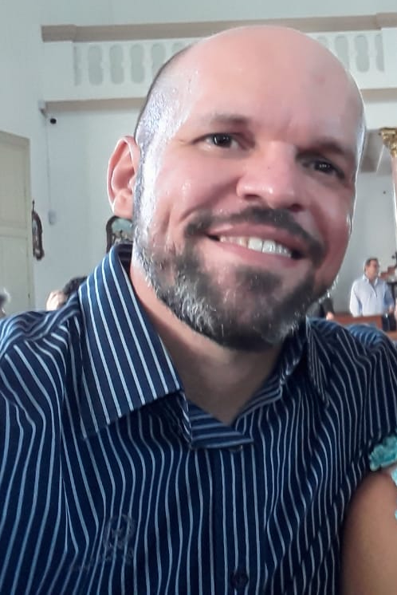

Guia Pedagógico para a formação de professores da EJA em Pensamento Computacional
Saiba maisSobre
O PensaEJA é um Guia com atividades sobre o Pensamento Computacional (PC),
baseado no método Paulo Freire, para ser trabalhado por meio
de componentes curriculares
na formação de professores da Educação de Jovens e Adultos (EJA).
A proposta é um dos produtos da dissertação de mestrado de Soraya Roberta
dos Santos Medeiros,
sob a orientação da Profa. Dra. Cibelle Amorim Martins.
O material foi elaborado no PPgITE-IMD-UFRN com a colaboração
dos
docentes
da Escola Estadual Antônio de Azevedo que atuam na EJA.
A produção está sob a licença Creative Commons
“Atribuição-NãoComercial-CompartilhaIgual” e
pode ser acessada na tela inicial por meio do botão
“PensaEJA”.
Publicações
Equipe
Organizadoras

Soraya Medeiros

Cibelle Martins
Autores
Antônio Dantas
Arian Lopes
Jozelí Azevedo
Laissa Silva

Sued Araújo
Contato
Soraya Medeiros
soraya.roberta.js@gmail.com
Cibelle Martins
cibelle.martins@ufrn.br